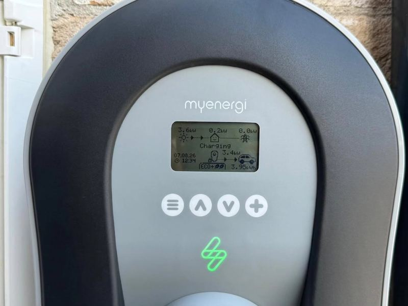

Electrician in Co. Kildare
Maher Electrical — Registered Electrical Contractor
Domestic · Commercial · Industrial · Solar PV · EV Chargers · Call-Out
From the Laois border to the M50 — covering the whole county
Your Local Electrician in Kildare
Maher Electrical covers Co. Kildare from our Mountmellick base, with fast response across Athy, Monasterevin, Kildare Town and the Curragh, through Newbridge and Sallins, and up to Naas, Maynooth, Celbridge and Leixlip.
Kildare is one of Ireland’s fastest-growing counties, and a lot of our work here is on new builds, extensions and EV charger installations for commuters. We are ECSSA registered and SEAI approved, so every job is certified correctly — from first fix to final sign-off.
Electrical Services Across Co. Kildare
Homes, businesses and renewable energy — covered from Athy to Maynooth.
Domestic
New builds, extensions, rewires and fuse board upgrades in estates and rural homes from Athy to Maynooth.
Commercial
Shops, offices, salons and commercial units in Naas, Newbridge, Kildare Town and across the county.
Industrial
Three-phase power, machinery hook-ups and distribution boards for Kildare workshops and industrial units.
Solar PV
SEAI-registered solar panels for Kildare homes and businesses — cut your bills and export the surplus.
EV Chargers
EV charger installation for Kildare commuters — 7kW home chargers, Zappi and solar-compatible options.
Call-Out & Repairs
Fault finding, tripping switches and power issues — call-out across Co. Kildare seven days a week.
Towns We Cover in Co. Kildare
From the Laois border to the M50 — we cover the whole county.
Athy, Monasterevin & South Kildare
Our closest Kildare towns, just over the county bounds — fastest response times.
- Athy
- Monasterevin
- Castledermot
- Ballitore & Narraghmore
Kildare Town, Newbridge & the Curragh
Covering the commuter belt along the M7 corridor and around the Curragh.
- Kildare Town
- Newbridge
- The Curragh & Sallins
- Rathangan & Nurney
Naas, Maynooth & North Kildare
New builds, renovations and commercial fit-outs across north Kildare.
- Naas
- Maynooth & Kilcock
- Clane & Kilcullen
- Celbridge & Leixlip
Solar PV & EV Charging in Kildare
Cut the commute cost — charge your EV from your own roof, with SEAI grant support.

Solar PV & Zappi EV Charging
For Kildare commuters, solar PV plus a Zappi charger is a simple win — the panels charge the car on sunny days and battery storage keeps power flowing in the evening. We size the system to your driving and usage, install and certify it, and handle the SEAI grant paperwork.
Frequently Asked Questions
Common questions from customers across Co. Kildare.
Do you cover all of Co. Kildare?
Yes. We cover the full county — Athy, Monasterevin, Kildare Town, Newbridge, Naas, Maynooth, Celbridge, Leixlip and everywhere in between.
Do you wire new builds in Kildare?
Yes. New build wiring, first fix and second fix, consumer units and certification for new homes and extensions across Co. Kildare are a core part of what we do.
Can you install an EV charger for a Kildare commuter?
Yes. We install home EV chargers across Kildare, including 7kW Zappi units that can charge from surplus solar. If you commute daily, we can size the charger and cable run to suit your parking setup.
Do you provide emergency call-outs in Kildare?
Yes — fast fault finding and call-outs seven days a week for tripping switches, power outages and electrical faults. Call or WhatsApp 085 200 8988.
Are you SEAI registered for solar PV in Kildare?
Yes. We are SEAI registered and install grant-eligible solar PV and battery storage for Kildare homes and businesses, including the grant paperwork.
Need an Electrician in Co. Kildare?
Call or WhatsApp Conn Maher directly for a free quote — new builds, rewires, solar PV, EV chargers and call-outs.